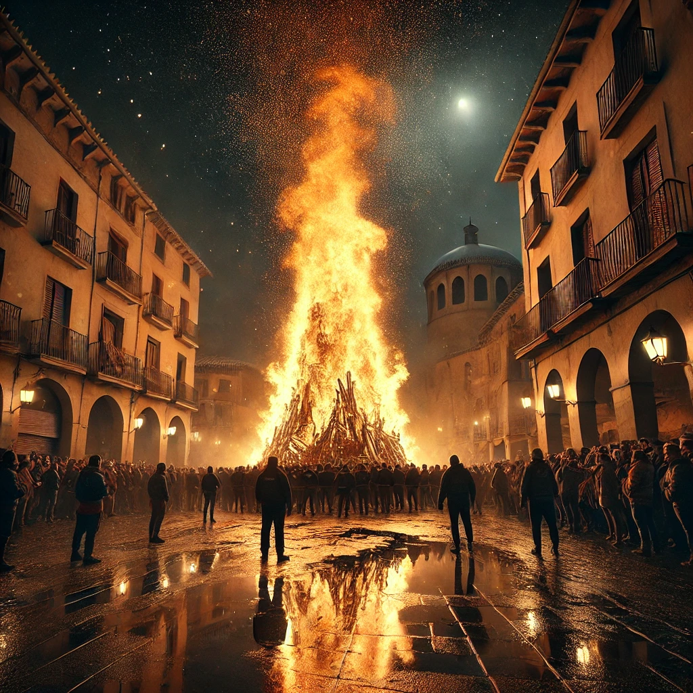
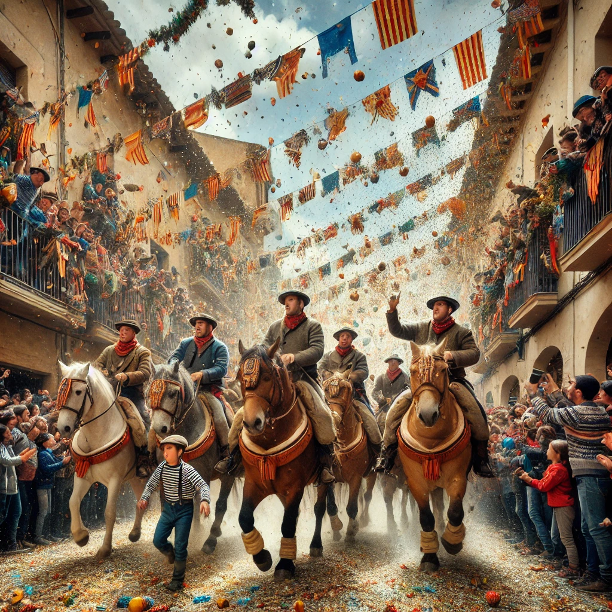

La Foguera
La Foguera de Sant Antoni, que se celebra en Canals, és coneguda com la foguera més gran del món, inclosa en el llibre dels Rècords Guinness. Es comença a preparar a partir del 7 de desembre, quan els veïns del poble comencen a acumular llenya per a formar la foguera en la Plaça Major. Aquesta foguera té una altura que supera els 18 metres i s'encén el 16 de gener en la celebració de la "Cremà", marcant l'inici de les festes en honor a Sant Antoni Abat, el patró de Canals. La foguera és un símbol de la protecció que el sant ha oferit a la vila des de temps antics, especialment en moments difícils com terratrèmols i malalties.
L'Entrada de la Soca
El 8 de desembre se celebra l'Entrada de la Soca, un dels moments més tradicionals i emotius de les festes. Un tronc gegantí, conegut com "la soca", és transportat pels carrers de Canals en una processó popular fins a la plaça del poble, on formarà part de la gran foguera. El tronc simbolitza la força i la resistència, elements centrals en la història de Sant Antoni Abat. L'Entrada de la Soca es fa amb gran solemnitat i és acompanyada de música tradicional i la participació dels veïns del poble.
Els Parells
Els Parells és una altra de les tradicions emblemàtiques de les Festes de Sant Antoni. Es celebra el tercer dia de festes, el 18 de gener. Durant aquest esdeveniment, grups de festers, muntats a cavall, recorren els carrers de Canals mentre llancen milers de joguets i dolços als veïns, especialment als més menuts. És una celebració marcada per la generositat, l'alegria i la participació de tota la comunitat. Els Parells representen l'esperit col·lectiu i la unió de la vila, que s'ha mantingut viva al llarg dels segles.
Les Pastes de Sant Antoni
Les Pastes de Sant Antoni són un dolç típic d'aquestes festes. Estan fetes a base d'ametlla, sucre i ous, i es reparteixen entre els veïns durant la celebració de les festivitats. A més de les pastes, els participants també gaudeixen d'altres plats tradicionals com l'arròs al forn, que es prepara en grans quantitats per a ser compartit amb tota la comunitat. Aquestes tradicions gastronòmiques ajuden a reforçar els vincles entre els habitants del poble i a mantenir viva la cultura local.
Activitats
Durant les festes de Sant Antoni Abat, a Canals, se celebren una gran varietat d'activitats, tant religioses com lúdiques. Entre elles destaca la benedicció d'animals, una cerimònia especial on els veïns porten les seues mascotes per a rebre la protecció del sant. També se celebren cavalcades, concerts, balls tradicionals i actes esportius. Les activitats inclouen el famos "Sopar de Gala", on es reuneixen centenars de persones per a gaudir d'un àpat col·lectiu, tancant el cicle de les festes amb un ambient festiu i familiar.